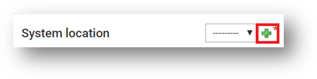

Use section #4.1 and section #5 of the lab sheet.
As described in the overview section, you will install two internal Pexip Conferencing Nodes and one externally exposed Pexip Edge Node. These components need to be added to separate Pexip Infinity System Locations. A system location is a way to group nodes in different logical configurations, such as by data centres or (as we will do in our lab) networks segments like LAN and DMZ. Each Pexip system location can have a specific configuration for preferred management services (such as DNS, NTP etc), and individual call control services. This is also where you configure DSCP (QoS) settings and MTU, which means that this configuration applies to all nodes within the System Locaion and you do not specify it per node.
The internal system location transcoding resources will be set to “This Location”. The conferencing nodes deployed in this system location will be set up using the “Transcoding Role”. See lab sheet section #4.1.
For the edge system location (see section #5), for this lab it too will be configured with the Transcoding location as “This Location”. We will initially configure the Edge node in the transcoding role. Later, we will manually change the role of this node and the transcoding resource for the external system location. NOTE: You would probably NOT do this in the real world, however for this lab, the process provides a few useful learning points:
Once the System Locations have been created, you will see some red warning text in the transcoding resources column saying that there are “No transcoding resource available”. When we add Conferencing Nodes in the Transcoding Role into these locations, these warnings will disappear. It provides useful feedback if you have configured the nodes and locations incorrectly.
Please refer to https://docs.pexip.com/admin/system_locations.htm.
Note: As you go through the deployment guide and use the Pexip GUI, make a note of the Green Plus icons next to some configuration items (see the image below as an example). These allow you to add additional configurations without having to stop the current configuration. For example, when you deploy Nodes in the next section, you could have added a System Location during that process, and Infinity will pop up the additional configuration options.
